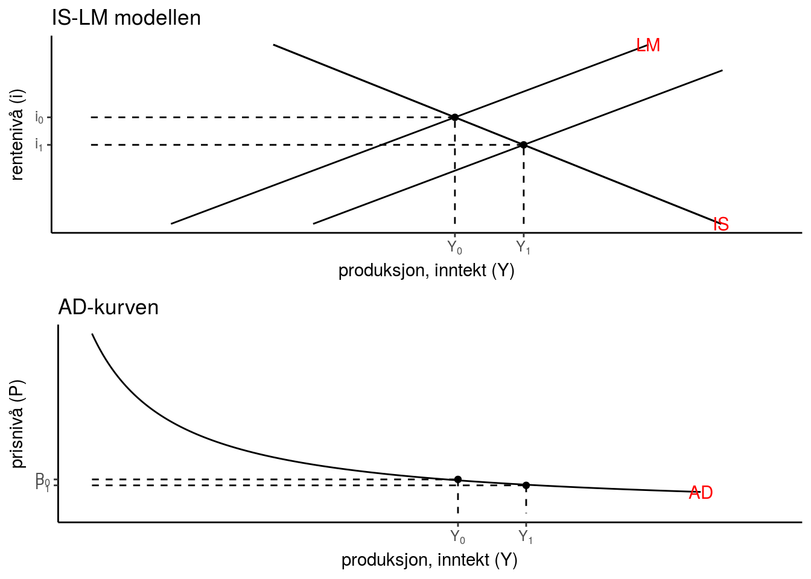
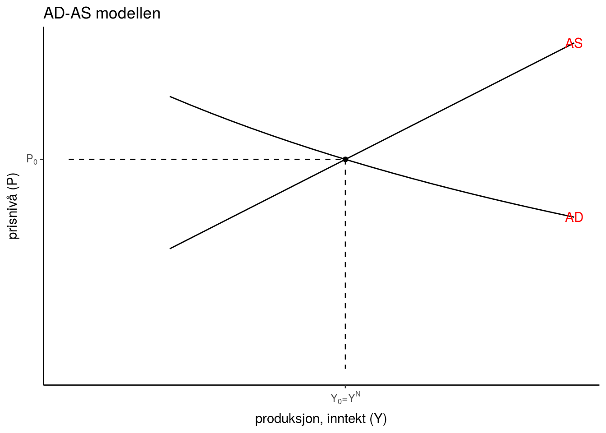
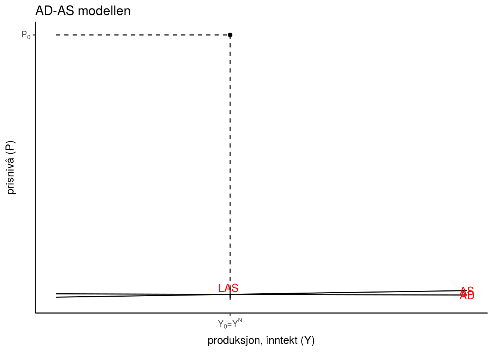

Grunnleggende bakgrunnkunnskaper
Stabiliseringsmål lukket økonomi
Intern balanse (lukke produksjonsgapet):
\[(Y-\overline{Y})=0\]
Sentrale nasjonalregnskapstall
- Bruttonasjonalprodukt (GDP/BNP): Den samlede verdien av alle varer og tjenester som blir produsert i landet i løpet av et år
- Nominelt BNP (LY) \[LY = PY\]
- Reelt BNP (Y) \[Y = LY/P \]
- Bruttonasjonalinntekt (GNP/BNI): Den samlede verdien av alle varer og tjenester som landets innbyggere produserer i løpet av et år
- Arbeidsledighetsrate:
\[u = 1-\frac{L}{N}\]
- Inflasjon:
\[\pi = \frac{\Delta P}{P} =\frac{P_{t} - P_{t-1}}{P_{t-1}}\]
Noen sentrale empiriske sammenhenger
Okuns lov: negativ sammenheng mellom endring i arbeidsledighet og vekst (eller endring i vekst) i BNP (realpriser)

Phillips-kurven: negativ sammenheng mellom arbeidsledighet og endring i inflasjon (eller inflasjon)

Hva bestemmer aggregert produksjon (BNP)?
Kort sikt (0-3 år):
- Pga antagelsen om prisstivheter på kort sikt (uendret lønn og produktpriser), vil samlet etterspørsel (\(AE\)) bestemme BNP (\(Y\))
- Vi legger dette til grunn i enkel Keynes, IS-LM, og Mundell-Fleming modellen (del I og del III)
Mellomlang sikt (5-10 år):
- Tilgangen på innsatsfaktorene arbeidskraft (\(L\)), teknologi (\(A\)) og kapital (\(K\)) bestemmer BNP (\(Y\))
- Langsiktig likevektsbetingelse for AD-AS modellen (del I)
Lang sikt (10-50 år):
- Teknologisk framgang (\(a\)), kapitalakkumulasjon (\(\Delta K\)) og befolkningsvekst (\(n\)) bestemmer BNP (\(Y\))
- Hovedresultatet fra Solow-modellen (del II)
Enkel Keynes-modell
- Likevekt i godemarkedet (varer og tjenester)
Aggregert etterspørsel (AE)
\[AE \equiv C + I + G\]
Markeder i likevekt: Godemarkedet (varer og tjenester)
\[Y = AE \equiv C + I + G\]
Adferdsligninger
Husholdninger
\[C = \overline{C} + c(Y - T)\]
Hvor \(0<c<1\) (marginale konsumtilbøyeligheten) og \(\overline{C}>0\) (inntektsuavhengig konsum)
Bedrifter
\[I = \overline{I} - b\cdot i\]
Hvor \(\overline{I}>0\) (‘animial spirits’) og \(b>1\) (lavere rente gjør flere investeringsprosjekter lønnsomme pga. økt nåverdi)
Sentralbanken
\[i = \overline{i}\]
Hvor \(\overline{i} >= 0\)
Offentlige myndigheter
\[G = \overline{G}\]
og
\[T = \overline{T}\]
Modellen består av
Endogene variabler (bestemt av modellen): \(Y, C, I, G\)
Eksogene variabler (bestemt utenfor modellen): \(\overline{C}, \overline{T}, \overline{i}, \overline{I}, \overline{G}\)
Parametre: \(c, b\)
Løsning av modellen:
Setter samtlige av adferdsligningene inn i likevektsbetingelsen for godemarkedet
\[Y = \overline{C} + c(Y - \overline{T}) + \overline{I} - b\cdot \overline{i} + \overline{G}\]
Løser modellen mhp. på Y (godemarkedet)
\[Y = \frac{1}{1-c} \left [ \overline{C} -c\cdot \overline{T} + \overline{I} - b\cdot \overline{i} + \overline{G} \right ]\]
- Grafisk framvisning

Komparativ statikk (skiftanalyse)
Analyse fra en likevekt til en annen
Økte investeringer (‘eks. pga. animal spirits’) \(\Delta{\overline{I}}>0\)
Formelt: \[\Delta Y = \frac{1}{1-c}\Delta \overline{I}>0 \text{ eller } \frac{\Delta Y}{\Delta \overline{I} } = \frac{1}{1-c}>1\]
Verbalt (dynamisk tolkning utenfor modellen):
Økte investeringer \(\rightarrow\) økt produksjon \(\rightarrow\) initierer en multiplikatoreffekt: \(\rightarrow\) økt disponibel inntekt \(\rightarrow\) økt konsum \(\rightarrow\) økt produksjon osv.
- Grafisk:

Stabiliseringspolitikk (G, T og i)
Eks. Reduserte offentlige utgifter \(\Delta G < 0\)
\[\Delta Y = \frac{1}{1-c} \left [ \Delta \overline{I} + \Delta \overline{G} \right ]\]
Dersom vi lar \(\Delta \overline{I} = - \Delta \overline{G} > 0 \Rightarrow \Delta Y = 0\) (dvs. intern balanse)
- Merk: Det politiske systemet i de fleste land innebygd iboende tregheter tilknyttet budsjettendringer. Dette gjør finanspolitikk vanskelig å implementere som konjunkturstabiliserende virkemiddel. Dette fordi treghetene gjør at man responderer for sent sett i forhold til konjunktursituasjonen
Øvelse
Redusert rentenivå, \(\Delta{\overline{i}}<0\)
Formelt:
Grafisk (Y,EA) plan og (Y,i) plan:
Verbalt (tolkning utenfor modellen):
IS-LM modellen
Markeder i likevekt: Gode- og pengemarkedet
Likevekstsbetingelsen for godemarkedet
\[Y = AE \equiv C + I + G\] Likevekstsbetingelsen for pengemarkedet
\[M^{s} = L_{m}\]
Adferdsligninger (bare endringer og nye ligninger er lagt til her)
Husholdninger
Bestemmer pengeetterspørselen (realverdi) \[L_{m} = \kappa Y -hi\] Hvor \(k>0\) (pengeetterspørselens inntektsfølsomhet) og \(h>0\) (pengeetterspørselens rentefølsomhet)
Sentralbanken
\[M = \overline{M} \]
Offentlige myndigheter
\[T = tY \]
Hvor \(t\) er prosentvis skattesats
Løsning av modellen:
Godemarkedet (samme løsningsmetodikk som under enkel Keynes-modell)
Bestemmer produksjonen
\[Y = \frac{1}{1-c(1-t)} \left [ \overline{C} + \overline{I} - b\cdot \overline{i} + \overline{G} \right ]\]
Merk: høyere skattesats gjør multiplikatoren mindre
Pengemarkedet (M0 - basispengemengden)
Bestemmer rentenivået
\[kY -hi = \overline{M}/P\]

IS-LM modellen
Viser den samtidige likevekten i gode- og pengemarkedet
Formelt
IS-kurven finner vi ved å differensiere likevektsbetingelsen for godemarkedet mph. Y og i:
\[ \frac{\Delta Y}{\Delta \overline{i}} =\left[\frac{-b}{1-c(1-t)}\right ] <0\]
- Økt rente gir lavere investeringer som initierer en negativ multiplikatoreffekt (redusert investeringer før til redusert etterspørsel som fører redusert konsum osv.)
LM-kurven finner vi ved å differensiere likevektsbetingelsen for pengemarkedet mhp. Y og i:
\[k\Delta Y -h\Delta i = 0 \Leftrightarrow \frac{\Delta i}{\Delta Y} = \frac{k}{h} > 0 \]
- Økt inntekt gir økt etterspørsel etter penger pga økt transaksjonsbehov. For at markedet skal være i likevekt, må dette motsvares av et høyere rentenivå
Grafisk 
Komparativ statikk (skiftanalyse)
Økning i pengemengden (M)
- Grafisk

- Verbalt (dynamisk tolkning utenfor modellen)
Økt pengemengde \(\rightarrow\) redusert rente (fra pengemarkedet) \(\rightarrow\) Økte investeringer \(\rightarrow\) økt produksjon \(\rightarrow\) initierer en multiplikatoreffekt: \(\rightarrow\) økt disponibel inntekt \(\rightarrow\) økt konsum \(\rightarrow\) økt produksjon osv.
Stabiliseringspolitikk (G, t og M/(i))
Konstant pengemengdevekst \(\frac{\Delta M}{M} = k\) (hvor k er lik veksten i BNP eller inflasjonen) er et stabiliseringspolitisk forslag, i form av en pengepolitisk regel, fremmet av Milton Friedman.
Forslaget kom på bakgrunn av boken A Monetary History of the United States, som Friedman forfattet sammen med Anna J. Schwartz. Basert på analyse av tidsserier for pengemengdeveksten i USA i perioden 1867-1963, argumenteres det i boken for at det er uforutsette endringer i pengemengden som er hovedårsaken til konjunktursvingningene i USA i denne perioden.
Innenfor IS-LM rammeverket, kan vi tolke dette som at sentralbanken skal unngå skift i LM-kurven som har sitt opphav i endringer i tilbudet av penger.
AD-kurven
Øvelse
Reduksjon i prisnivået (P)
Grafisk (Y, i) plan og (Y, P) plan
Verbalt (tolkning utenfor modellen):
Svar
Tokning: Økte produktpriser reduser realpengemengden. I pengemarkedet fører dette til en økning i rentenivå. Den økte renta medfører redusert etterspørsel pga lavere private realinvesteringer, som initierer en negativ multiplikatoreffekt siden redusert etterspørsel fører til mindre konsum som fører til redusert etterspørsel osv.
Arbeidsmarkedet, ledighet og AS-kurven
Adferdsligninger (tilknyttet arbeidsmarkedet)
Husholdningene
Organisert som en fagforening hvor lønnsnivået \(W\) blir bestemt som et resultat av forhandlinger
\[W=P^{e}F(\underset{(-)}{u}, \underset{(+)}{z})\] \(P^{e}\) er prisforventningene i perioden hvor lønnsnivået er forhandlet for. \(u\) er arbeidsledighetsraten, hvor høyere ledighet gir svakere forhandlingsposisjon. \(z\) samler opp alle andre faktorer (eks. velferdsordninger, oppsigelsesfrist, størrelsen på streikekassen) som reflekterer forhandlingsstyrke
Bedriftene
Etterspør arbeidskraft og tilbyr produktet i et marked med monopolistisk konkurranse
Produktfunksjonen er gitt ved
\[Y=AL^{\alpha}\] Hvor \(0<\alpha \le 1\)
Produktprisen kommer som et påslag (markup) på det (nominelle) lønnsnivået
\[P=(1+μ)W\]
AS-Kurven
Setter uttrykket for produktprisen inn i uttrykket for bestemmelse av lønnsnivået gir oss
\[P=(1+μ)P^{e}F(u,z)\]
Produktfunksjonen kan settes inn i definisjonen for arbeidsledighet:
\[u=\frac{U}{N}=\frac{N-L}{N}=1−\frac{L}{N}=1−\frac{Y/A}{N}=1 - \frac{Y}{AN}\]
Kombinerer vi det siste uttrykket med utrykket ovenfor får vi
\[P=(1+μ)P^{e}F(1 - \frac{Y}{AN},z)\]
Differensierer vi \(P\) mhp. \(Y\) finner vi AS-kurven
\[ \frac{\Delta P}{\Delta Y} = -(1+μ)P^{e}F'_{u}(1 - \frac{Y}{AN},z)\frac{1}{AN}>0 \]
Tolkning: Økt produksjon gir økt etterspørsel etter arbeidskraft, dette reduserer arbeidsledigheten samt øker fagforeningens forhandlingsstyrke. Økt forhandlingsstyrke gir seg utslag i høyere lønnskrav. Siden produktprisen er et påslag på lønningene, vil produktprisene måte stige når lønningene øker.
Naturlig produksjons- og ledighetsnivå
- På mellomlang sikt (5-10 år) antar vi hele veien at \(P=P^{e}\) (fagoreningen gjør ikke systematisk feil i sine prisforventninger).
Det gjør at vi kan skrive: \[1=(1+μ)1F(1 - \frac{Y^{n}}{AN},z)\]. Hvor \(Y^{n}\) er det naturlige produksjonsnivået (produksjonsnivået som gjelder under fleksible priser og lønninger).
Dette nivået bestemmer også det naturlige ledighetsnivået direkte gjennom
\[u^{n} = 1 - \frac{Y^{n}}{AN}\]
Merk:
\(\mu>0 \text{ (monopolistisk konkurranse)} \Rightarrow \overline{Y}>Y^{n}\)
\(\mu=0 \text{ (fullkommen konkurranse)} \Rightarrow \overline{Y}=Y^{n}\)
I dette kurset antar vi at markup-faktoren er såpass lav, slik at \(Y^{n} \approx \overline{Y}\)
AD-AS modellen for en lukket økonomi
Viser den samtidige likevekten i gode-, penge- og arbeidsmarkedet

- Skjæringspunktet mellom AD, AS, og LAS-kurven gir oss:S
- Likevektsproduksjonen
- Likevektsledigheten
Komparativ statikk (skiftanalyse)
Kort sikt (1.5-3 år)
- Statiske prisforventninger (\(P^{e}\) er eksogen) Økte private realinvesteringer (‘animal spirits’), \(\overline{I}>0\) 
Tolkning: Økte private realinvesteringer fører til et positivt skift i AD-kurven på bakgrunn av de etterspørselsvirkningene som ble beskrevet under IS-LM modellen. Effekten på produksjonen vil imidlertid her ikke bli like sterk som tidligere, siden økt etterspørsel innebærer økt produksjon og økt etterspørsel etter arbeidskraft og med det redusert ledighet. Den reduserte ledigheten øker arbeidernes forhandlingsstyrke, og medfører etterhvert økte lønninger og produktpriser som bidrar til å dempe den opprinnelige etterspørselsøkningen.
Mellomlang sikt (3-10 år)
- Korrekte prisforventninger (\(P^{e}=P\))

Tolkning: Korrekte prisforventninger fører til et negativt skift i AS-kuren helt produksjonen og arbeidsledigheten er tilbake til sitt naturlige likvektsnivå.
- Sentralt poeng: Korrekte prisforventninger medfører at modellen innehar selvkorrigerende mekanismer
Stabiliseringspolitikk (G, T og M/(i))
Eks. reduksjon i pengemengden (\(\overline{M}<0\))

Tolkning: Reduksjon i pengemengden fører til høyere rente og med det til et negativt skift i AD-kurven, dette på bakgrunn av de etterspørselsvirkningene som ble beskrevet under IS-LM modellen. Er reduksjonen riktig tilpasset, vil produksjon og arbeidslediget gå tilbake til sitt naturlige likevektsnivå, mens prisnivået (og med det inflasjonen) vil være uendret.